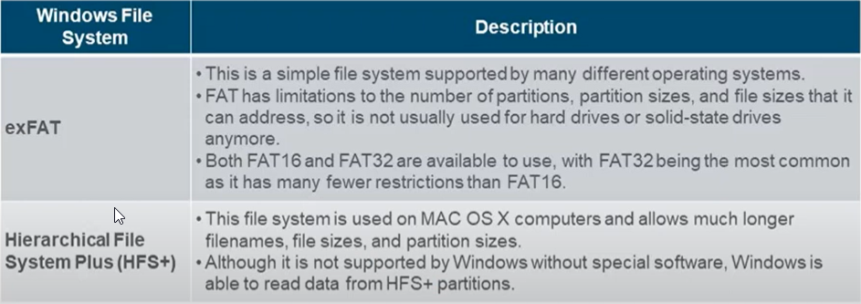
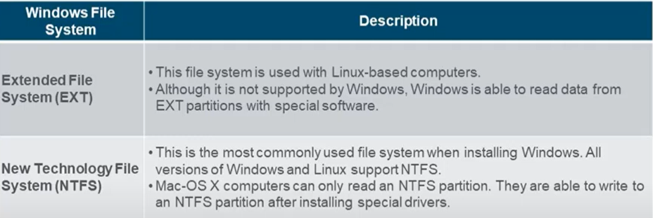

Windows File Systems

Exfat :SAT32 ve FAT16 yetersizliğinden exFAT geldi. 4 gb ve daha büyük dosyaları yönetebilir. genel olarak kullanılmaz genel olarak flashDisklerde kullanılır.
HFS+:Hiyerearşif dosya sistemi tamamen MAC OS dosya sistemidir. Windıws MAC Os un dosya sistemini okuyabiliyor.

Extended File System (EXT) : Linux tabanlı bilgisayarlarda kullanılır bu sistem windowsu okuyabilir.
New Technology File System(NTFS) :Bu winowsun geliştirdği dosya sistemi büyük dosyaları ve geniş disk olanları destekler , güvenlik dosyalarını tutabilir. zaman damgalarını tutabilir.